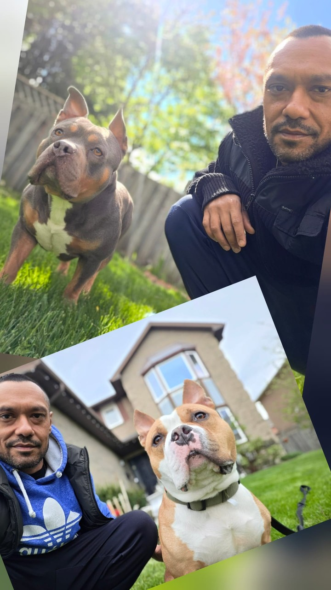

Taran Aujla · Ontario, Canada
Stopped. Rebuilt. Writing what came of it.
The mind is where it all starts. Everything else follows. Read what's here, take what's useful.
I'm Taran.
A few years ago, in my late thirties, life threw challenges from several directions at once. Career, relationships, reputation, family, health, and the weight of everything that had stacked up over time. It wasn’t one crisis, but several things (obstacles, setbacks, opponents, whatever you want to call it) I thought I could manage, but that slowly became too heavy to carry the way I had been carrying them.
I kept grinding, pushing harder, facing everything head on. That’s the strategy most of us are told to run on… and for a while it seems to work. We feel tough, resilient, like we’re winning, until it no longer works.
Eventually I realized that this strategy was only going to solve surface-level issues, nothing permanent. So I stopped fighting. Stepped back, not to quit but to really observe what the F is going on here, and just rebuild completely, from the foundation.
Most of us sense the script running quietly underneath our lives. Very few of us stop long enough to question it.
The setbacks were not the interruption to the path. They were the path.
The impediment to action advances action. What stands in the way becomes the way. Marcus Aurelius
I had to stop pretending the old way was still working. I stepped back, all the way back. Before I changed anything, I went still for a while. Long enough to question the script I had been running on, and to observe what I was actually operating from. There was a lot to see once I stopped: the people around me, the behaviors, the things that drive us, the machinery underneath the way we live, the mind, the body, the feelings, and how all of it fits together. None of this is visible while we are still chasing. The stillness gave me awareness, the plain kind. Awake as in noticing what I was doing while I was doing it. I could finally start living consciously, instead of running on the autopilot we were handed.
I started with the mind, because the mind is what runs everything. I changed how I thought, what I believed, and what I would no longer accept. I cut the people, the places, and the things that did not fit the person I was becoming. I re-prioritized my goals. The body caught up on its own. The sharper, healthier, clearer version was the byproduct, not the project. The visible change is obvious. The real change happened earlier, where no one could see it. The longer version lives on a separate page.
What I value most out of it is the composure. Less shakes me now. Problems arrive and I meet them from a steady place instead of a reactive one, because the one thing that runs everything, my own mind, is no longer up for grabs.
I am not writing this from the top of anything. I am still learning, still adjusting, and that is the point. What is rigid breaks the moment the world moves, and the world is moving fast. I would rather stay in motion, adapting as I go, than anchor anywhere and call it arrival.
My professional life has always circled around transactions in real estate, risk, timing, and people making decisions under pressure. I spent more than a decade in law across Ontario and Quebec, working in business and real estate. The training gave me the foundation, the habit of reading carefully and asking what can go wrong. But what pulled me was never the analysis but the deal itself, the strategy, the negotiation, the timing, the counterparty, the room.
That is where my work sits now. Through Primegate, and through Resolve.
Different sides of the same instinct, one looking for opportunity, the other finding a way through pressure. Both require preparation, judgment, restraint, and steadiness when the room moves fast. The rebuild changed how I carry that work, with selective files, less noise, more attention, and a steadier hand.
I train. I learn. I question things and take nothing on face value. I read old books, the kind that have outlived their authors. I sit still, in the unromantic sense of just sitting still. I spend time with my two dogs and volunteer at shelters, which have shown me what loyalty and being real actually look like.

The other thing the rebuild gave me was the reading. Stoic philosophy, and the writers who came after it, old and new. All of them pointing at the mind, how it works and how it runs a life quietly until we notice. This site is where I write about that, and the things the curriculum leaves out. The patterns most people don't slow down enough to see. Old wisdom that still holds up even though the modern world rarely makes room for it. Nothing here is theory. What I write about, I used to rebuild myself, and I use it still.
I don't share any of this to posture or to sell. I share it to remind myself what is possible, and because if it helps one person see that their own rebuild is within reach, that is enough. Most of what stops us was never as solid as it looked.
There is one more reason. Writing this down where anyone can read it is also how I hold myself to it. A public account makes drift costly. So let this be on the record: I am not going back to running on the old script. I will stay aware, stay deliberate, and keep operating from the version I rebuilt.
We suffer more often in imagination than in reality. Seneca
If anything here is useful, take it. If not, leave it.
If it helps
An open door.
I get it. The men this door is built for are usually the last to walk through it. I was that guy. If you, or someone you know, is running too hard, feeling stuck, in a loop, leaning on something to get through, or facing questions that don't have practical answers, you can reach out. No judgment. No assessment. Just a conversation.
Not as a coach. Not as a service. Just as a man who has been through it, came out sharper, and is happy to share what helped if it helps.
No fee. No agenda. No follow-up sequence.
If anything here lands, there's a short form just below. If I can help, reach out. If you've already done your own version of this, I'd be glad to hear from you too.
Real estate work runs through Primegate on commercial terms. This is something different.
Off-Curriculum
Things a formal education won't teach you.
Short notes on what life keeps teaching me. Written for anyone not sure which long book to pick up next. Built from Stoic philosophy, the wisdom that runs alongside it, and real lived experience. Read in five minutes. Reflect on for longer.
Four notes below are open to read. The rest live in the Starter Collection, a single designed PDF sent the moment you join the notes.
Watch Your Thoughts.
On the discovery that the voice in our head isn't actually us. With Marcus Aurelius and James Allen.
The Script We Were Handed.
On the life most of us are living that we never really chose. With Thoreau.
Don't Death Grip the Outcome.
On the effort paradox, the dichotomy of control, and the cost of needing the result. With the Bhagavad Gita and Epictetus.
One Day at a Time.
On the practice of letting tomorrow be tomorrow, and staying with today. With Marcus Aurelius.
The Starter Collection
Ten more notes, sent free when you join.
The notes below live in the Starter Collection, a single designed PDF sent the moment you subscribe. New notes land when something is worth sending.
No spam. Unsubscribe in one click.
The Art of Assent.
On the gap between what happens and what we make it mean. With Epictetus.
Adversity Is the Training.
On meeting difficulty as the curriculum, not the interruption. With Epictetus.
The Way That Doesn't Force.
On wu wei, releasing the grip, and the kind of action that actually moves things. With Lao Tzu.
Negative Visualization.
On the Stoic practice that sounds like negative thinking and produces the opposite. With Seneca.
Everyone Is Fighting Their Own Battle.
On what we don't see in others, and why this perspective is mostly for us. With Ian MacLaren.
Playing Not to Lose.
On the fear we mistake for responsibility, and the cost of holding too tight. With Epictetus.
The Hedonic Treadmill.
On the chase that doesn't deliver, and the way off the treadmill. With Seneca and Epicurus.
The Impermanence of Things.
On the fact we keep forgetting, and what changes when we remember it. With Marcus Aurelius and Heraclitus.
The Night-Sea Journey.
On the pattern most real rebuilds follow, named two thousand years ago and again a hundred years ago. With Carl Jung.
Being Carried.
On the quiet presence that arrives when there is nothing left of us to push. With Marcus Aurelius.
New notes land when something is worth sending, not on a schedule.
The books behind these notes are on the reading list.
Connect
How to reach me.
If something here lands, or you want to share a thought, write me. No obligation.
Practice site
The real estate practice is conducted through HomeLife G1 Realty Inc., Brokerage. Resolve is a name used by Taran Aujla in connection with real estate services provided through the brokerage. Resolve is not itself a brokerage. For real estate inquiries, please visit resolveproperty.ca directly.